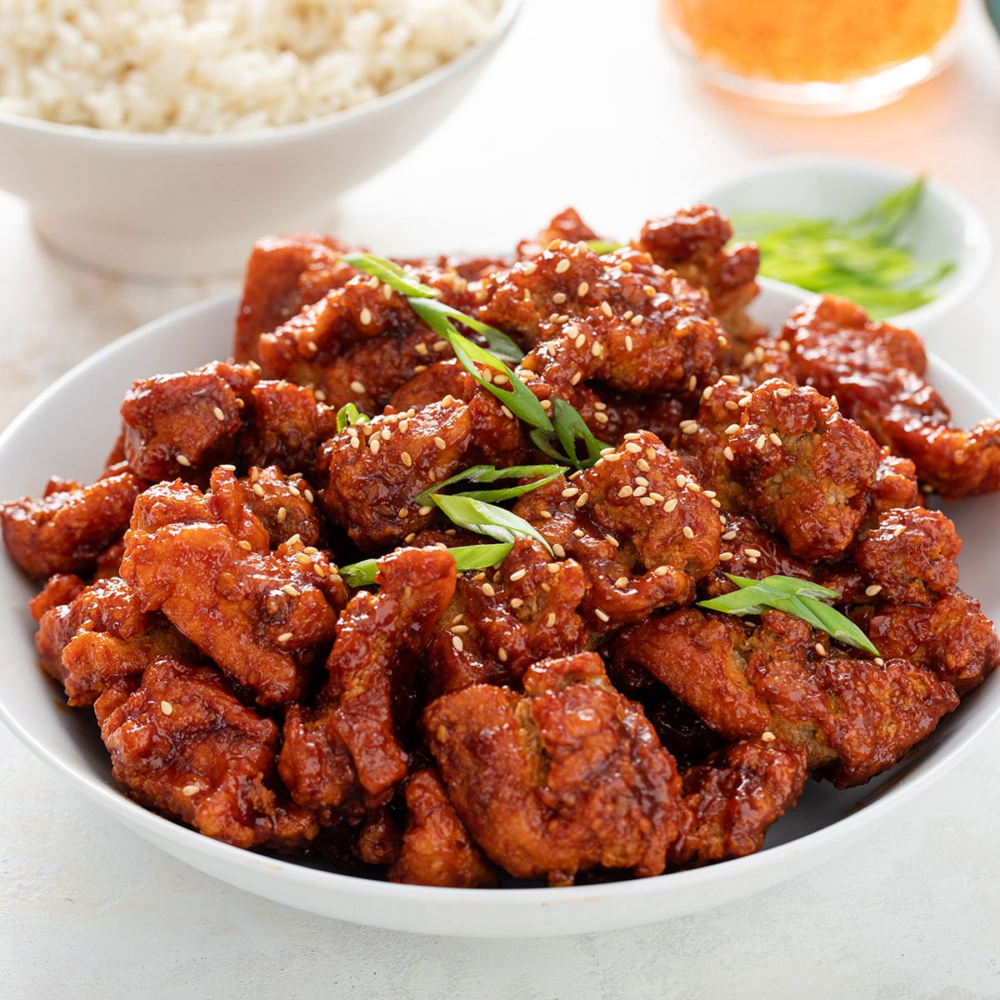

Korean Fried Chicken

Description:
It’s such a culinary pleasure to bite through the well-seasoned, crunchy crust that reveals juicy chicken
underneath. This Korean fried chicken recipe will give you that thin, crispy and crunchy crust along with two
delicious sauce options: soy garlic, and red spicy sauce!
Ingredients:
The Crispy Chicken
- chicken
- flour
- garlic salt
- celery salt
- thyme
- salt
- pepper
- paprika
- chili flakes
- baking powder
- white pepper
- buttermilk
The KFC sauce
- gochujang
- chili flakes
- vegetable oil
- sesame oil
- honey
- soy sauce
- brown sugar
- sesame seeds
- garlic
- ginger
- spring onion
Directions:
- Place the chicken in a bowl. Add the buttermilk, salt, pepper, and garlic salt. Mix together, cover and
place in the fridge to marinade for at least 1 hour
- Heat a large pan of vegetable oil until hot. You’ll need at least 1 litre of oil.
- 1 ½ cups plain flour,1 tsp salt,1 tsp ground black pepper,½ tsp garlic salt,½ tsp celery salt,1 tsp dried
thyme,1 tsp paprika,1 tsp baking powder,1 tsp chili flakes
- Take the chicken out of the fridge. Lift a piece from the buttermilk and allow the excess to drip off.
Dredge the chicken in the crispy coating mixture, ensuring it’s fully covered. Place on a tray
and repeat until all of the chicken is coated.
- Once the oil is hot enough, add in 5 or 6 of the chicken tenders. You can add more or less depending
on the size of your pan, just be sure not to overcrowd the chicken.
- Cook for 3-5 minutes until golden brown and cooked in the middle. You can check this by
cutting open a piece of chicken, if it’s no longer pink in the middle, it’s cooked.
- put 2 tbsp gochujang paste, 2 tbsp honey, 4 tbsp brown sugar, 4 tbsp soy sauce, 2 cloves garlic, 2 tsp
minced ginger, 1 tbsp vegetable oil, 1 tbsp sesame oil into a sauce pan and stir together.
- Bring to the boil, then simmer for 5 minutes until thickened.
- Pour over the crispy chicken and carefully toss together, then top with the spring onions, chilli flakes,
and sesame seeds before serving.